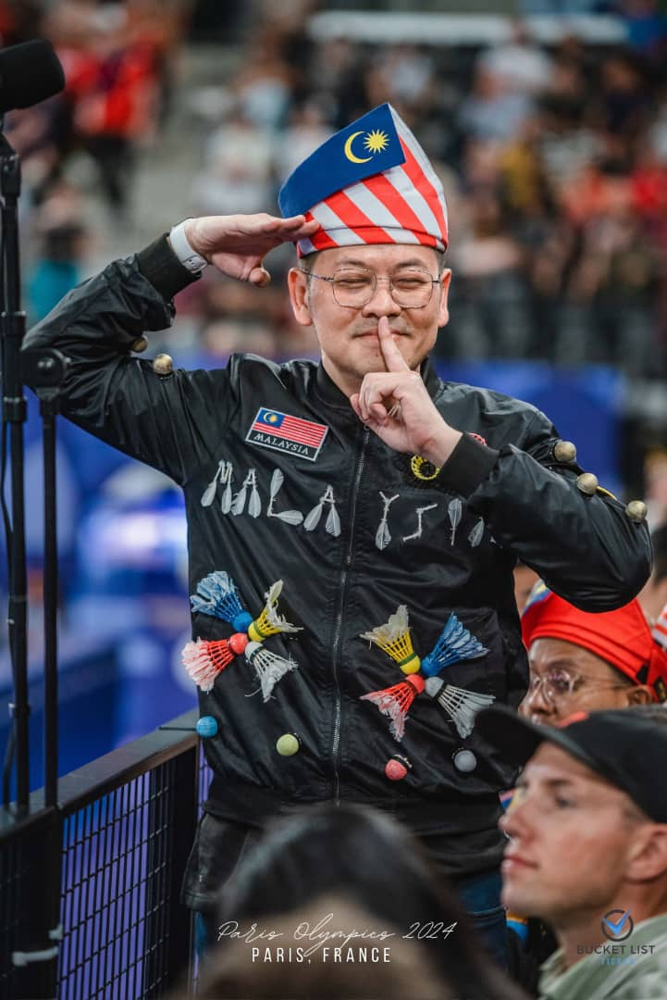
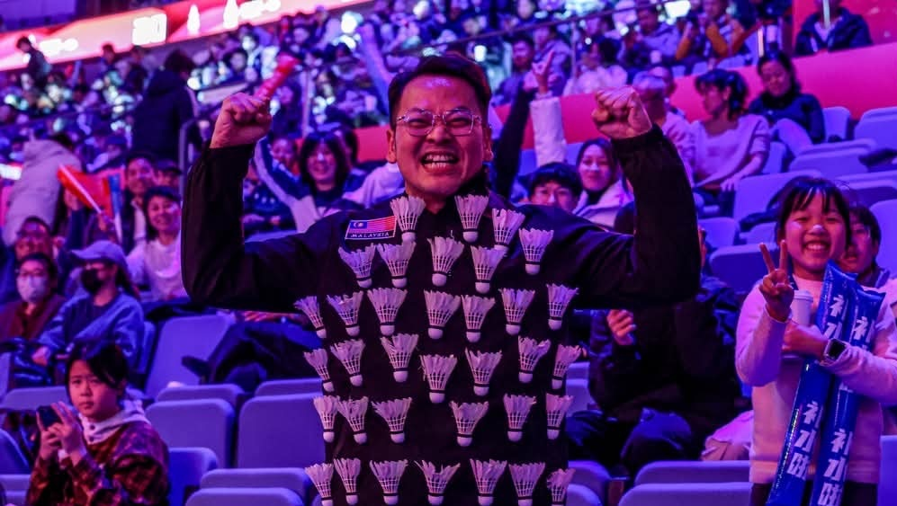
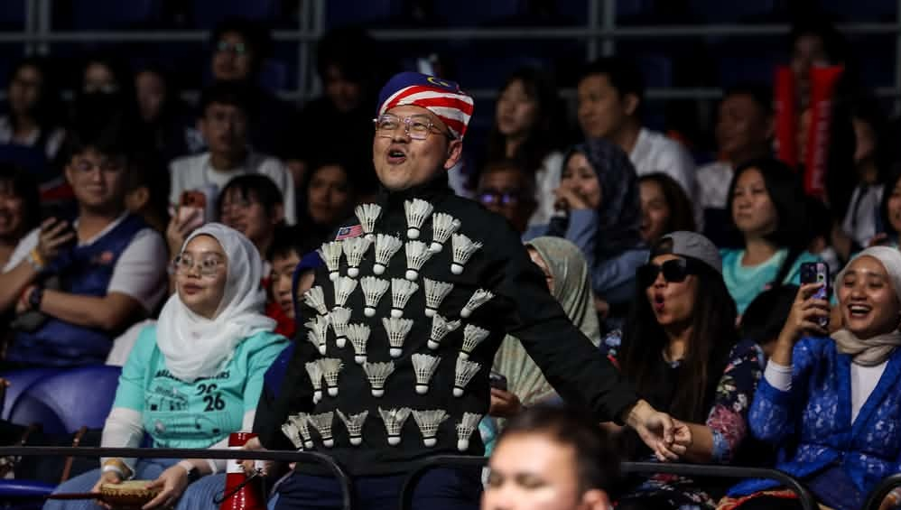
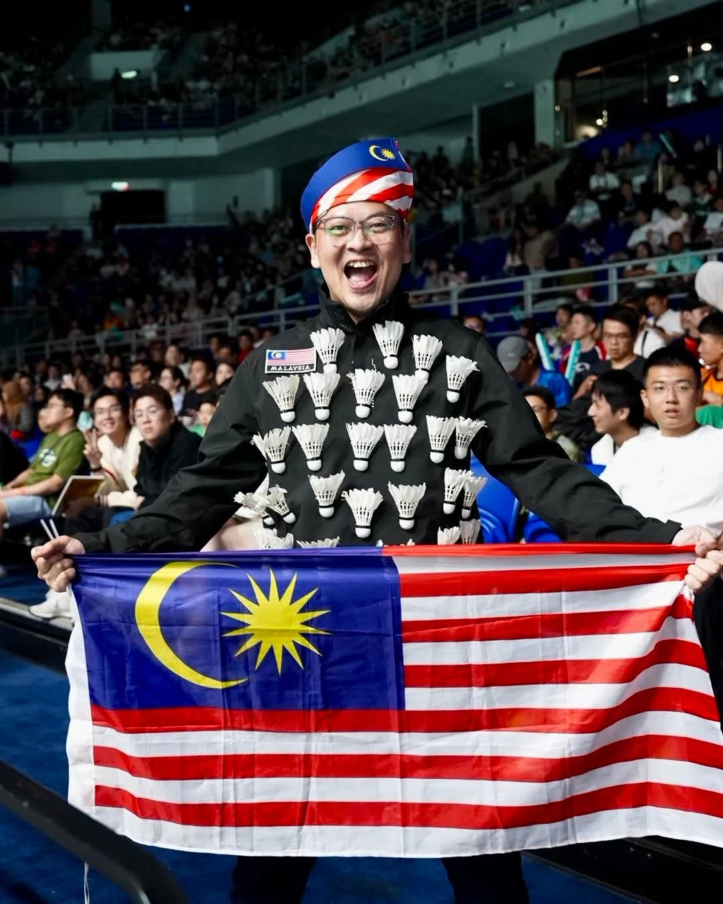
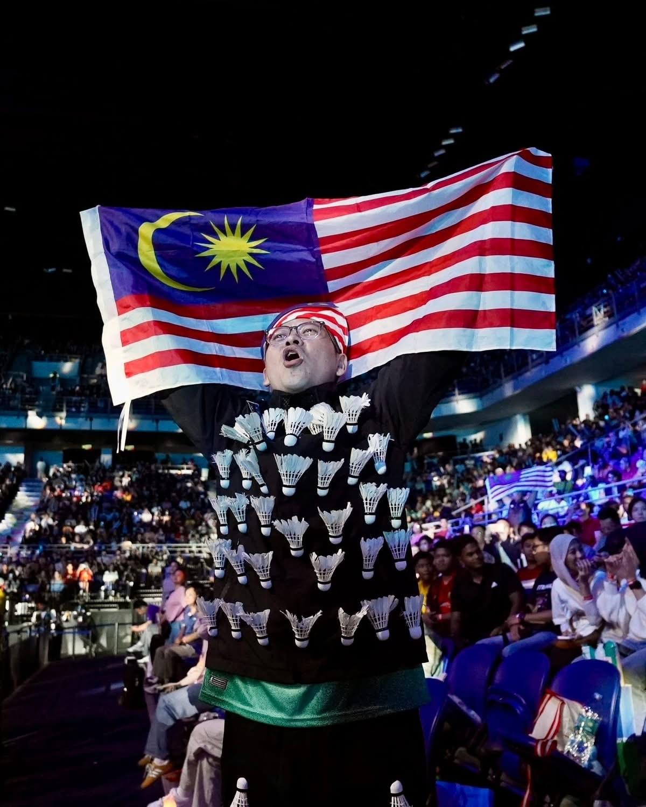
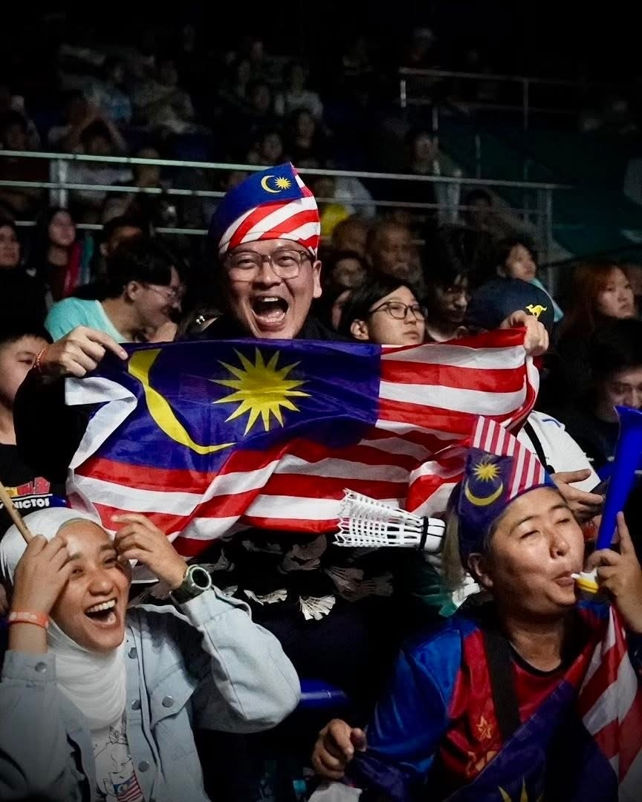
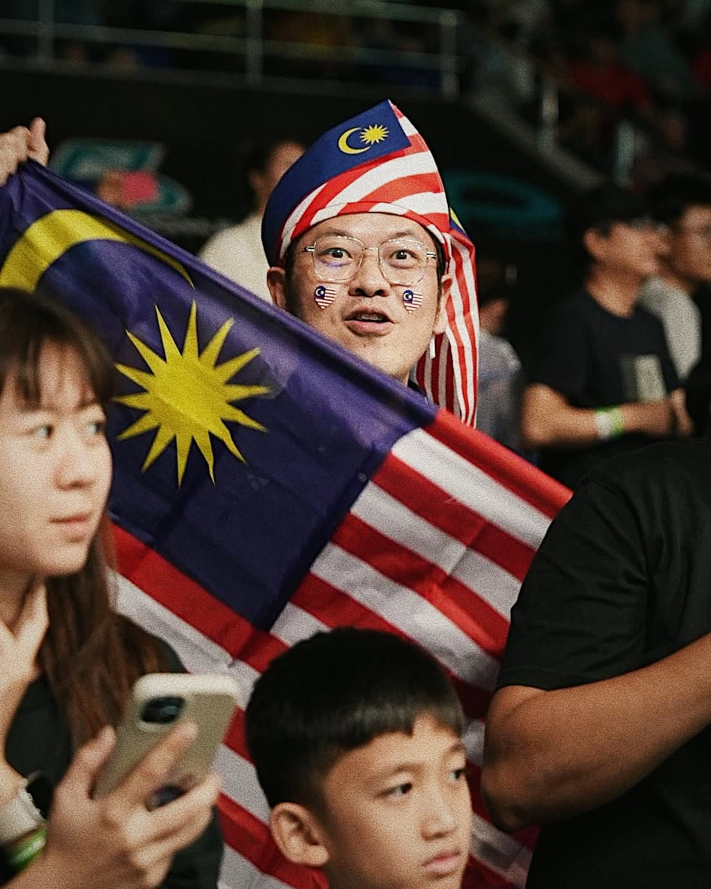
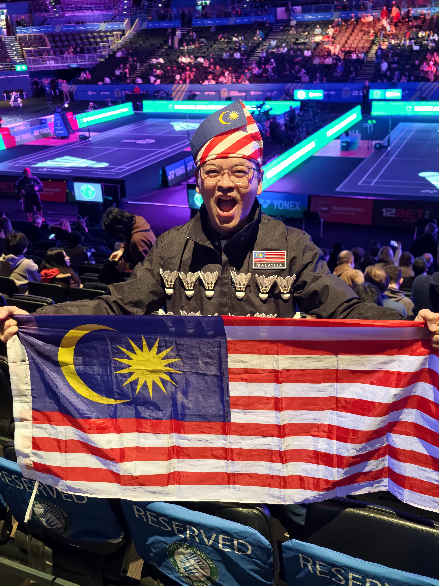
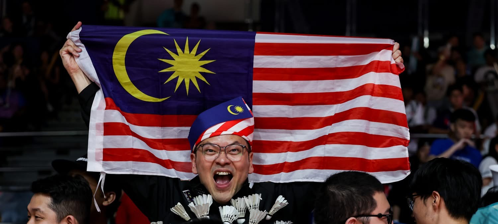
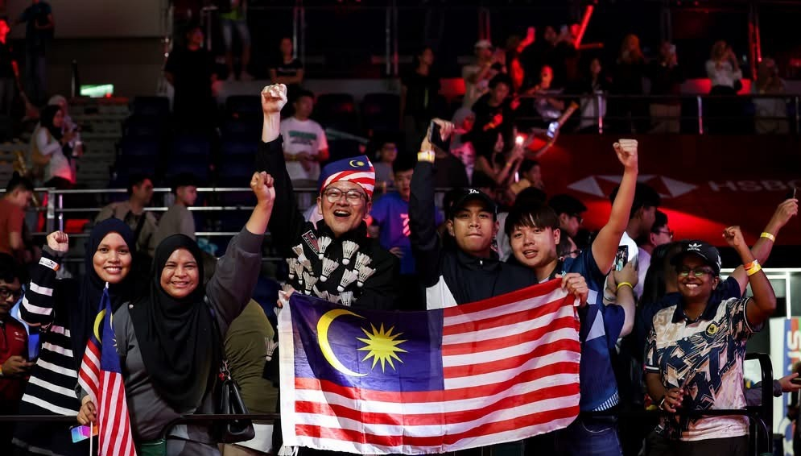

About Me
I’m Joe, better known as AhJo Badminton, a passionate Malaysian badminton superfan, cheerleader, and digital content creator. My mission is twofold: to create an electrifying, unforgettable atmosphere directly on the stadium floors for our national athletes, and to capture that intense passion through high-energy digital content that unites millions of fans online.
To bridge the arena gap where Malaysian voices are often outnumbered, I am actively working to build a thriving online community and establish an official Malaysian badminton support and cheerleading team—boosting athlete morale and solidifying our badminton fan culture worldwide.
My Journey – Fueled by Love & Sacrifice
From local stadiums to international arenas, I travel directly to major world tournaments—bringing live stadium energy to both the stands and digital screens worldwide.
🔥 2026 Season
Malaysia Open • Thailand Masters • All England • Thomas & Uber Cup (Denmark) • Thailand Open • Malaysia Masters • Singapore Open
⚡ 2025 Season
Malaysia Open • All England • Thailand Open • Singapore Open • Indonesia Open • Hong Kong Open • Korea Open • Malaysia Super 100 • SEA Games (Thailand)
⏳ 2024 Season
Malaysia Open • Asia Championships • Thailand Open • Malaysia Masters • Singapore Open • Australia Open • Paris Olympics • Petronas International Challenge • KL Masters 100 • China Masters • BWF World Tour Finals
Media & Milestones
- Interviewed and featured by major networks: Astro Arena, TV3, Hot FM, Era.FM, The Star, Sin Chew Daily, BWF YouTube, and The Rakyat Post.
- Cheered live on the ground through sacrifices, lost voices, and unforgettable tournament rallies.
The Impact & Vision
- Viral Content Creator: Directing emotional, high-energy stadium cheers and match content touching millions across Facebook and Instagram.
- Athlete Support: Driving intense stadium energy making players feel they are never alone.
- The Movement: Establishing a structured, passionate fan support network traveling globally to strengthen national pride and unity.
Unforgettable Moments












Let’s Work Together
I am looking for brands, media partners, and sponsors who believe in heart, passion, and purpose. Let’s raise our voices louder and show the world the true spirit of Malaysia.
Connect on Facebook Connect on Instagram